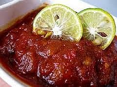

Sambal Bajak Spesial

Bahan:
- 75 ml minyak sayur
- 3 lembar daun jeruk purut muda, buang tulang daunnya, iris halus
- 20 buah cabai rawit merah, buang tangkainya
Haluskan:
- 100 g cabai merah keriting
- 10 buah cabai rawit hijau
- 7 butir bawang merah
- 4 siung bawang putih
- 1/2 sdt terasi goreng
- 1 sdt garam
- 1 sdt gula merah sisir halus
Cara membuat:
- Panaskan minyak, tumis bumbu halus hingga wangi.
- Tambahkan daun jeruk dan cabai rawit. Aduk hingga layu dan sambal matang.
- Angkat, dinginkan. Simpan dalam wadah bersih, kering, dan bertutup.